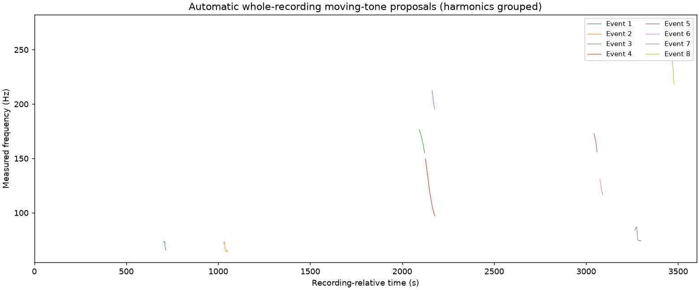

Find where a
recording was made.
DOPPLERGEIST geolocates audio by matching the sound of passing aircraft to historical flight paths.
An aircraft over Livermore.
An MP3 recorded in Livermore, matched against 466 nearby aircraft.

The Doppler shift, visible.
Pitch falls as an aircraft passes. That curve connects the recording to the aircraft’s motion.


More flyovers. One location.
DOPPLERGEIST scans the whole recording and fits independent flyovers to a shared microphone position and clock.

Start with a recording.
Run DOPPLERGEIST locally with your audio and its recording-time window.
Get DOPPLERGEIST